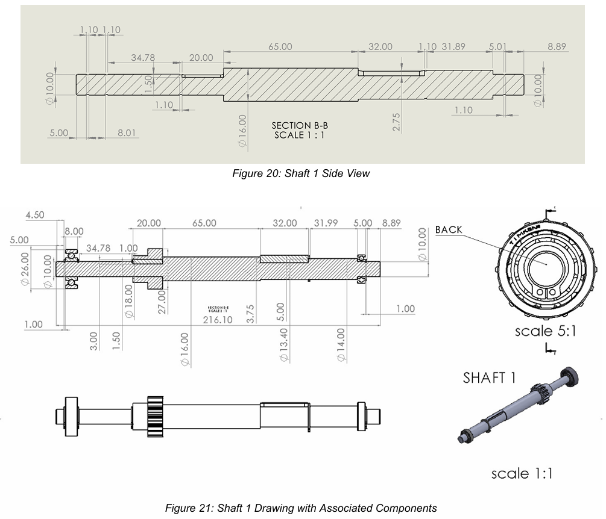
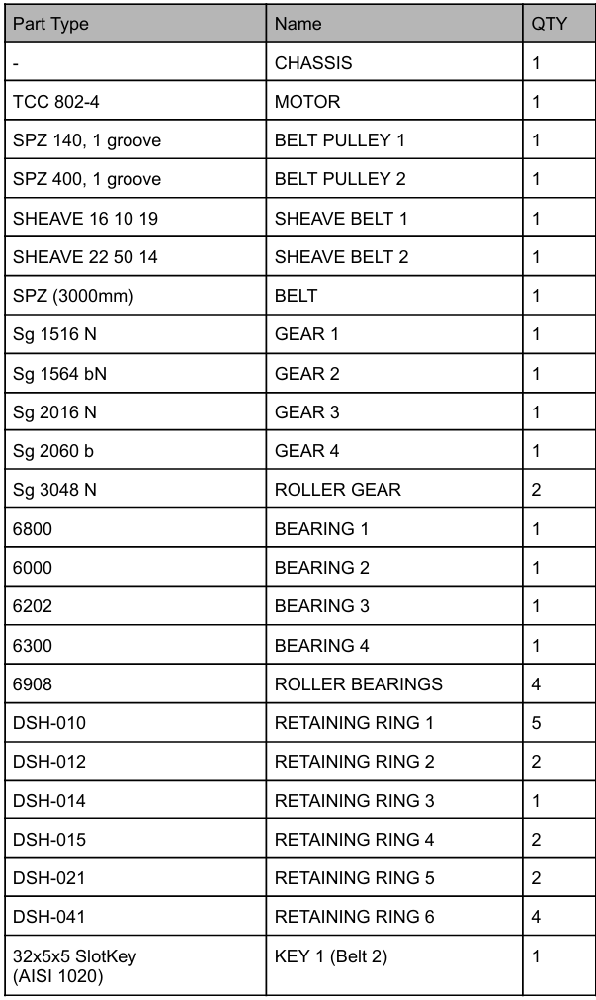

Selected Work
Machine Element Design



Swipe or scroll horizontally for more →
For our Machine Element Design module, my team was tasked with engineering the full power transmission system for a sugar cane juice extraction machine — starting from a bare requirement (extract juice from cane at a given rate) and working all the way down to specific shaft radii and catalogue part numbers.
As team lead, I worked through the motor selection and one design path for the speed reduction system, then took ownership of 2 of the 4 shafts once we settled on a 3-stage belt–gear–gear configuration. That meant calculating power, forces, and moments at each stage, sizing shaft radii to hold up under those loads, and picking real bearings and retaining rings from industry catalogues rather than idealised values. The whole process — every assumption and every number — is written up and defended in a 40-page report.
- Determined required rated power and friction coefficients to select the drive motor
- Designed a 3-stage belt–gear–gear speed reduction configuration and evaluated it against 2 alternative layouts
- Sized 2 shafts from calculated loads, selecting bearings and retaining rings from industry catalogues
- Produced the assembly drawing and detailed shaft drawings shown above
- Wrote and refined the full design report defending every decision made
Team: Chen Yi-Heng, Muhammad Afiq Bin Aerman, Jonas Sarabia — NTU MA3001, AY2025/2026.